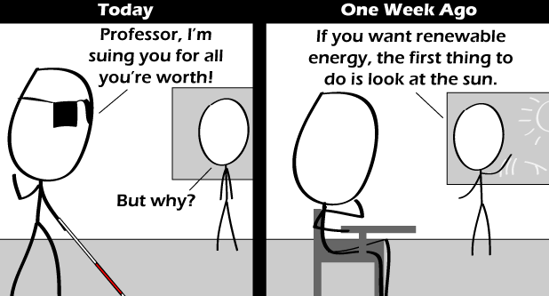

Comic JK 674
When I Feel Like It
⇤
<
?
>
⇥

⇤
<
?
>
⇥
Forum
.
RSS
.
Digg
.
Facebook
.
Reddit
.
Twitter
.
Stumbleupon
Enter your thoughts on number 674. Please, spamming, trolling, phreaking, or making *too* much fun of people with disabilities. WOOOOOOOOOOOOOO! > Well, tell us, how many WOOOOOOOOOOOOOO! in the comments did you encounter? > that must have been interesting... are you sure thats safe... maybe you should go see a doctor... >>I wish to object to your use of multiple ellipses... people might start to think that you're me... >>> Haha I did the same with explosm, V3, dead_winter, guilded_age, dreamland chronicles, menage a trois/penny&aggie, magic chicks/eerie cuties, lawl/nerf-this/scout crossing/motokool, oots/erfworld, licd/lfgcomic, Devilbear, and a few more which I don't remember the top of my head! All in the last four months. Currently I'm reading blip. Now guess what I do with the rest of my life haha you wouldn't believe it. >>> Edit: Forget about blip, I just finished it. >>>>If I wouldn't know better (which I don't, but it's nice to pretend), I'd say you're doing your PhD... you should add phdcomics to your list. >>>>>and "Pearls Before Swine", unless you happen to be a crocodile... >>>>>> Heh. Second term bachelors, so you're not that off ;D I also read SMBC, and I'll check out your suggestions! Thanks a lot : ) Is this a copy of xkcd? >no its your mom. >>acutally xkcd is a copy of this.. comicjk has more... >>>noob >>>xkcd: 894 comicjk: 674 - comicjk is behind by 220 comics, at 2 extra comics / week it'll take 110 weeks or a bit over 2 years to catch up. >>> xkcd: 2 million regular readers. comicjk: 26 regular readers. I think there's a lot more to playing "catch up" than a simple comic count. >>>> It's not the quantity of the fanbase, but the quality. XKCD readers normally accept anything put out by Randall Munroe, as long as it sounds relatively nerdy and makes them feel superior. >>>>> Guys... I was there when comicjk was still young (7 comics or so) and I've been with xkcd for a while longer, and while yeah this obviously references xkcd, I wouldn't ever say that one copies the other. None is better really, you might prefer one over the other. But that's your choice, it has no effect on the comic. So please just enjoy the comic, or don't and go read another webcomic, or maybe do something "useful". >>>> 12 regular readers? Really? If you're counting by community (fora, apparent number of unique writing styles in recurrent messages in these commments, etc.), then you're probably missing the less vocal readers — like me. =P (If not: Never mind; I said nothing!) (Also not trying to argue anything here — ComicJK is obviously behind XKCD readership either way — just wanted to add a side-note). >>>>> 12, and you're probably 3 of them. >>>>>>(okay this level of indenting is getting silly) >>>>>>>You're implying that people who read webcomics do useful things. You're wrong. >>>>>>>> Reading webcomics is not useful? >>>>>>>>> Yep. >>>>>>>>>> Lol. >>>>>>>>>>> I got linked to this from the xkcd fora a while ago, and read all ~650 or so comics that day. I like this because the comics happen every day, so I check about once a week and get two more laughs than at xkcd! I think he actually just saw your mother naked and is making up excuses.